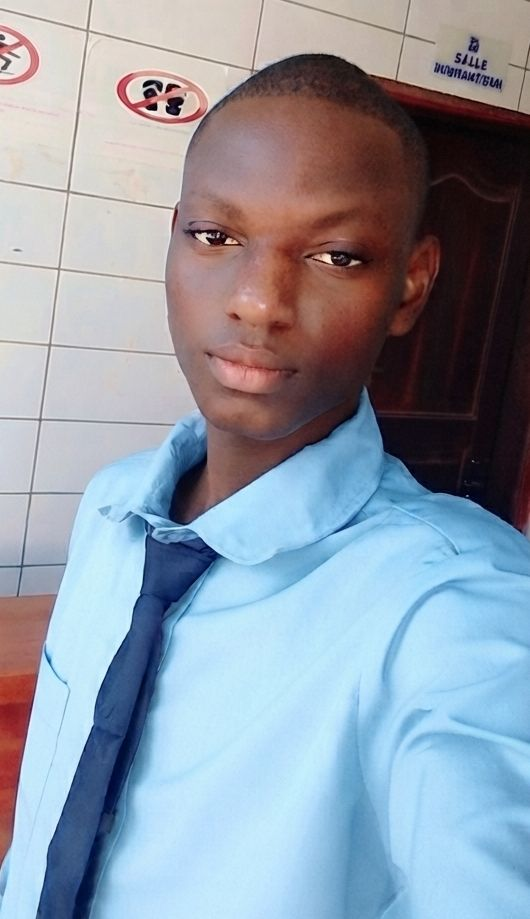

Étudiant en 3e année de Sécurité des Systèmes et Réseaux Informatiques à Parakou (Bénin), je conçois des solutions web, mobiles et réseau pour des besoins réels.
Je m'appelle Windéyama Sosthène YOKOSSI. Je suis en troisième année de DTS Sécurité des Systèmes et Réseaux Informatiques (SSRI) à l'Institut Universitaire Les Cours Sonou (IUCS), à Parakou.
En parallèle de mes études, je propose des services technologiques : développement web et mobile, maintenance informatique, réparation de smartphones et services administratifs. Je conçois des outils numériques pensés pour des besoins concrets — agents de santé communautaire, propriétaires immobiliers, étudiants en réseau — plutôt que des projets abstraits.
Ma double compétence en développement logiciel et en administration réseau (Cisco, sécurité, infrastructures) me permet d'aborder chaque projet du code jusqu'au câblage.
Une double base technique : développement logiciel et infrastructures réseau.
Des solutions concrètes pour particuliers et entreprises à Parakou et environs.
Sites vitrines, applications web progressives (PWA) et outils métier sur mesure, du cahier des charges à la mise en ligne.
Diagnostic, dépannage et entretien de parc informatique pour particuliers et petites structures.
Intervention rapide sur pannes matérielles, logicielles et déblocage courants.
Accompagnement dans la saisie, la mise en forme et le suivi de documents administratifs.
Configuration et administration d'équipements réseau (routeurs, VLAN, VPN), mise en place de politiques de sécurité.
Création de contenus audio et visuels : montage, habillage graphique et production sonore.
Une sélection d'outils et de réalisations réseau construits pour répondre à des besoins réels.
Application phare pensée pour les agents de santé communautaire au Bénin — mode hors-ligne (IndexedDB/Service Worker), tableaux de bord agent/admin, export PDF. Base Supabase (React + Tailwind), migration vers PHP/MySQL en cours pour répondre à une exigence d'hébergement ministériel.
Planificateur de révisions installable, avec plan d'étude personnalisé — conçu pour préparer des examens sur plusieurs semaines.
Gestion de biens immobiliers et facturation électrique multi-propriétés, avec factures PDF et partage WhatsApp.
Marketplace de vêtements en ligne pensée pour le marché béninois, en français — construite en HTML/CSS/JS avec back-end PHP/MySQL.
Application sociale de lecture biblique et jeu-quiz avec niveaux, concours à phases et attestations — pensée pour une portée mondiale, notamment pour les églises et leurs enfants. Back-end Node.js/Express + PostgreSQL, front-end React.
Jeu pédagogique pour apprendre l'administration réseau, avec une identité visuelle "Dark Ops".
Architecture réseau segmentée en 4 VLANs (Direction, Comptabilité, IT, Invités) avec routage inter-VLAN, politiques ACL avancées et port security — violation de sécurité testée et bloquée avec succès.
Déploiement d'un serveur VPN WireGuard sur Ubuntu, tunnel chiffré configuré et validé avec connexion client mobile (handshake confirmé).
Scanner combinant scan de ports TCP multi-threadé (banner grabbing), détection service/version par regex et recherche de CVE via l'API NVD, avec génération automatique d'un rapport HTML (Jinja2) et PDF (WeasyPrint).
Configuration et suivi continu d'un routeur en environnement réel — gestion des règles, supervision et maintenance.
Projet mêlant robotique et intelligence artificielle éducative avec programmation par blocs — une approche visuelle pour piloter capteurs, mouvements et logique de jeu.
Mise en place d'une solution de supervision réseau et serveurs avec Zabbix, tableaux de bord et alertes couplés à Grafana.
Institut Universitaire Les Cours Sonou (IUCS), Parakou
Institut Universitaire Les Cours Sonou (IUCS), Parakou
Institut Universitaire Les Cours Sonou (IUCS), Parakou
CEG 1 Natitingou
Composition et arrangement.
Pratique régulière.
Découverte de nouveaux sujets.
Disponible pour des missions freelance ou des collaborations avec SYNUS Tech.